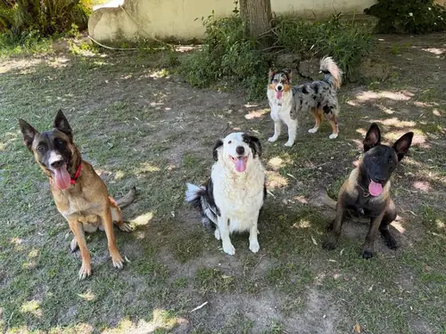

☀️ Garderie canine · Miramas
Garderie pour chien à la journée
Vous travaillez, vous avez un rendez-vous, des travaux ou un déménagement ? Déposez votre chien le matin : il passe la journée en famille sur notre terrain de 2 000 m², sans cage, et vous le récupérez le soir. 20 € la journée, 10 € la demi-journée.
🧭 Pourquoi une garderie
Huit heures seul, c'est long pour un chien
Un chien est un animal social. Seul toute la journée, la plupart s'ennuient, et l'ennui se voit : aboiements qui gênent les voisins, coussins éventrés, chien qui vous saute dessus le soir parce qu'il a tout gardé pour vous. Ce n'est presque jamais un problème d'éducation, c'est un chien qui n'a rien eu à faire.
La garderie règle ça simplement : une journée avec d'autres chiens et des humains disponibles, sur un grand terrain, dans une maison et pas dans un chenil. Pas de box, pas de cage, un petit groupe : c'est la même vie de famille que nos pensionnaires de la pension, le temps d'une journée.
C'est pour vous si… vous travaillez sur place une ou plusieurs journées par semaine, vous avez un chiot qui doit apprendre à vivre avec d'autres chiens, vous recevez des artisans ou déménagez, ou vous voulez simplement qu'il se dépense vraiment.
🕗 Le déroulé
Une journée de garderie chez nous
- 8 h – 12 hArrivée — vous le déposez quand ça vous arrange. On prend deux minutes pour savoir comment il va et ce qu'il a mangé.
- MatinéeLe terrain — 2 000 m² clôturés pour courir, renifler et jouer avec les copains du jour. C'est le moment où il se dépense le plus.
- MidiRepas et sieste — sa ration, à son heure, puis un vrai temps de repos au calme, dans la maison ou à l'ombre.
- Après-midiJeux calmes et câlins — pas d'agitation permanente : un chien a besoin de dormir. On alterne activité et repos selon son âge.
- Dans la journéePhotos WhatsApp — vous recevez de ses nouvelles, en photo, sans avoir à les demander.
- 13 h 30 – 19 hDépart — vous le récupérez fatigué et content. Le soir, il dort — et vous aussi.

💰 Formules & tarifs
Journée, demi-journée ou test
Des prix affichés, pas un devis à demander. Le calcul exact se fait tout seul à la réservation.
La journée
20 €
De 8 h à 19 h. Repas donné si vous l'apportez, jeux, sieste, photos. La formule de ceux qui travaillent.
La demi-journée
10 €
5 h 30, le matin ou l'après-midi, arrivée libre. Parfait pour un rendez-vous, une demi-journée de travail, ou un chiot qui découvre.
Le test 24 h
25 €
Avant une première garde : il découvre les lieux et les autres chiens, passe une nuit sur place, et on voit ensemble comment il vit la séparation.
Les options, à cocher à la réservation
- 🚗 Transport à domicile — on vient le chercher, on le ramène, ou les deux. Prix calculé selon la distance.
- 🦮 Balade individuelle — rien que pour lui, en plus du terrain : 6 € les 30 min, 9 € les 45 min.
- 🛁 Toilettage simple — bain, séchage, brossage, oreilles : 30 €.
- 🎴 Carte de fidélité — offerte : à la dixième visite, une demi-journée offerte.
✅ Avant la première journée
Ce qu'il faut savoir
Une rencontre d'abord
On fait toujours connaissance avant la première journée : vous voyez les lieux, votre chien rencontre la maison et la bande.
Un chien sociable
La garderie se vit en groupe. Si votre chien supporte mal ses congénères, on vous orientera vers une solution qui lui convient mieux.
Vaccins et antiparasitaires
CHLPPi à jour, identification par puce ou tatouage, traitement contre les puces, les tiques et les vers. Carnet de santé la première fois.
Sa ration et ses habitudes
Apportez son repas et dites-nous tout : ses peurs, ses jeux préférés, ce qu'il ne faut surtout pas faire.
📍 D'où viennent nos chiens
Une garderie à Miramas, pour tout le nord de l'étang de Berre
Vous déposez votre chien à Miramas, ou on vient le chercher avec l'option transport.
Miramas · Istres · Saint-Chamas · Salon-de-Provence · Fos-sur-Mer · Berre-l'Étang · Port-de-Bouc · Martigues · Vitrolles
Vous partez plusieurs jours ? La pension familiale prend le relais, dès 25 € la nuit.
❓ Questions fréquentes
Garderie pour chien : vos questions
Quels sont les horaires de la garderie ?
On accueille les chiens tous les jours, week-end compris, de 8 h à 19 h. Les arrivées et les départs se font entre 8 h et 12 h, puis entre 13 h 30 et 19 h. La demi-journée dure 5 h 30, le matin ou l'après-midi, avec une heure d'arrivée libre dans ces créneaux.
Combien coûte une journée de garderie ?
20 € la journée complète, 10 € la demi-journée. À chaque visite, votre carte de fidélité avance : la dixième vous offre une demi-journée.
Faut-il apporter son repas ?
Oui, apportez sa ration habituelle : on la lui donne à l'heure à laquelle il mange chez vous. Changer d'alimentation pour une journée, c'est le meilleur moyen de lui donner mal au ventre.
Mon chien n'a jamais été gardé : comment savoir s'il va aimer ?
On se rencontre toujours avant la première journée. Si vous avez un doute, le test de 24 heures (25 €) permet de voir comment il découvre les lieux, les autres chiens et une nuit loin de vous. Et si on estime que la collectivité n'est pas faite pour lui, on vous le dit.
Pouvez-vous venir chercher mon chien chez moi ?
Oui, c'est l'option transport à domicile : aller-retour, récupération seule ou retour seul. Le prix dépend de la distance et s'affiche automatiquement au moment de la réservation.
Quels vaccins faut-il ?
Votre chien doit être à jour de ses vaccins (CHLPPi), identifié par puce ou tatouage, et traité contre les puces, les tiques et les vers. Apportez son carnet de santé la première fois. Tout est expliqué dans vaccins et vermifuge avant la garde.
Mon chien ne supporte pas les autres chiens : la garderie est-elle possible ?
La garderie est collective : elle convient aux chiens sociables. Pour un chien réactif, on propose plutôt des visites à domicile ou des promenades seul, et on en parle franchement sur la page chien réactif.
Peut-on ajouter une balade ou un toilettage pendant la journée ?
Oui. Une balade individuelle coûte 6 € les 30 minutes ou 9 € les 45 minutes, et un toilettage simple 30 € : il vous revient le soir propre et brossé.
🐾 Nos autres services
Tout ce qu'on fait pour vos animaux
Pension pour chien
En famille, sans cage, dès 25 €/nuit
Promenade de chien
En nature ou depuis chez vous, dès 15 €
Garde de chien à domicile
Sortie, repas, médicaments, dès 15 €
Garde de chat à domicile
Repas, litière, câlins, dès 12 €
Lapins, poules & NAC
Visites à domicile dès 8 €
Toilettage simple
Bain, séchage, brossage, 30 €